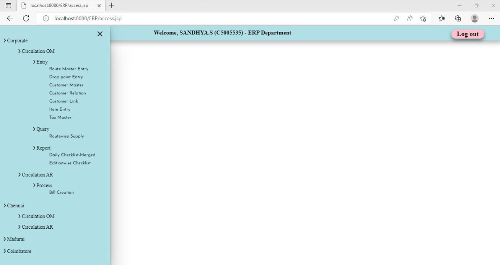
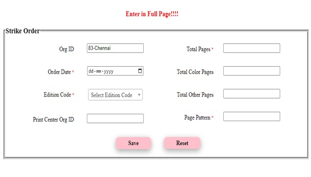
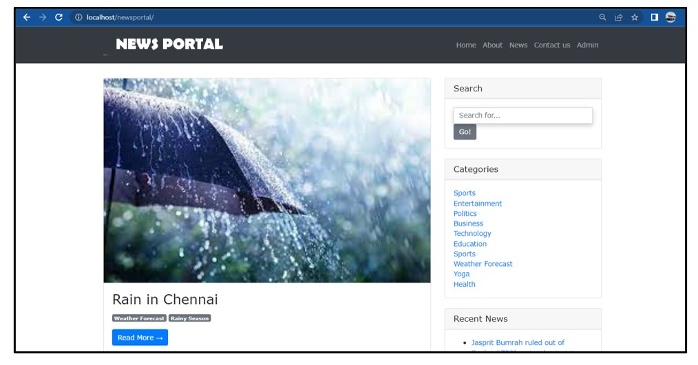
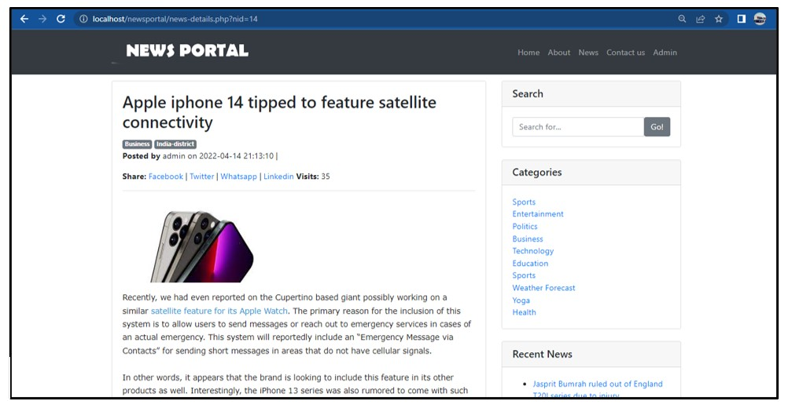

- Designed and developed a scalable web application using HTML, CSS, JavaScript, JSP, and AJAX for the front end, and Core Java, JDBC, MySQL, and Java Servlets for the back end.
- Migrated critical operations from Oracle to the new application, significantly reducing system load, improving performance, and streamlining operations across 20+ centers in India.
- Automated reporting and billing processes, including daily performance reports for the CEO, monthly/weekly bills, and journal entries integrated with Oracle, using PDF and Excel formats.
- Led a team of 10, mentoring juniors, and managing tasks such as development, testing, implementation, technical documentation, and user manual creation.
- Enhanced user experience by reducing job queues and enabling quicker task completion, benefiting 50+ daily users.
- Monitored and resolved operational issues across multiple centers, ensuring consistent application support and performance.
 
- Sample ScreenShots
|
- Developed a dynamic News Portal Website using PHP, MySQL, HTML, CSS, and Bootstrap.
- The platform allows users to view categorized news articles, search for specific topics, and access the latest updates.
- Designed an intuitive interface with Bootstrap for responsiveness, ensuring a seamless user experience across devices.
- Integrated a robust back end with MySQL for managing articles, user accounts, and admin functionalities like adding, editing, and deleting news content.
 
- Sample ScreenShots
|